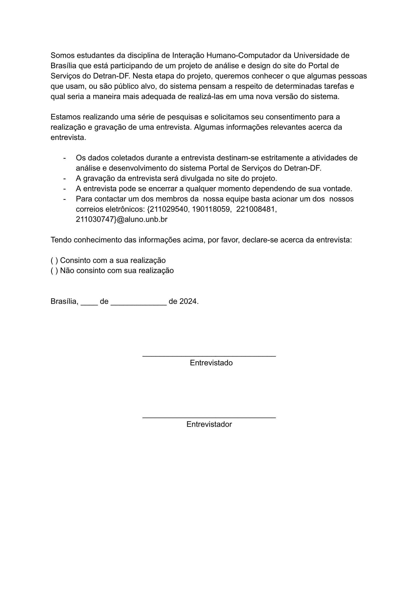

Aspectos Éticos
Para dar credibilidade e valor ao nosso trabalho é necessário conduzir também pesquisas humanas. Tais coletas, portanto, trazem tona questões sensíveis a ética que precisam ser trabalhadas com atenção e respeito. Então, esses tópicos levantados são os chamados "aspectos éticos" que definem aquilo que é fundamental para garantir a segurança, integridade, respeito e bem-estar da comunidade. Para realizar esse trabalho de pesquisa temos no Brasil a resolução nº 466/2012 do Conselho Nacional de Saúde췇 que estabelece diretrizes e normas para pesquisas científicas que trabalham com seres humanos das quais pautam os seguintes princípios fundamentais:
-
Princípio da autonomia: necessidade de obter o consentimento voluntário e bem informado das pessoas envolvidas na pesquisa, ao mesmo tempo em que protege grupos vulneráveis e indivíduos legalmente incapazes, como menores, alunos ou subordinados. Isso implica que qualquer pesquisa com seres humanos deve tratá-los com respeito, considerando sua capacidade de tomar decisões e cuidando daqueles que estão em situações de fragilidade.
-
Princípio da beneficência: exige a avaliação equilibrada dos riscos e benefícios, tanto no presente quanto no futuro, tanto para indivíduos quanto para grupos. Deve-se buscar maximizar os benefícios da pesquisa e minimizar os danos e riscos potenciais. Esses danos podem se manifestar em várias dimensões, como física, psicológica, moral, intelectual, social, cultural ou espiritual, em qualquer estágio da pesquisa ou após sua conclusão.
-
Princípio da não maleficência: implica na obrigação de evitar danos previsíveis relacionados pesquisa, sejam eles imediatos ou posteriores.
-
Princípio da justiça e equidade: está relacionado import칙ncia social da pesquisa, priorizando benefícios substanciais para os participantes da pesquisa e minimizando as cargas impostas aos participantes vulneráveis. Isso garante a consideração justa dos interesses envolvidos e mantém o propósito humanitário e social da pesquisa em foco.
Termo de Consentimento
Ao longo do projeto serão usados dois termos de consentimento, um para o questionário, e outro para as entrevistas. Essa decisão foi tomada porque cada maneira de coletar dados tem suas especificidades e precisam ser cobertas de maneiras diferentes.
A figura 1 apresenta o Termo de Consentimento usado para o questionário.
Figura 1
A figura 2 apresenta o Termo de Consentimento usado para entrevistas.
Figura 2

Referências Bibliográficas
- BRASIL. Resolução nº 466, de 12 de dezembro de 2012, que trata de pesquisas em seres humanos e atualiza a resolução 196. Brasília, DF: Diário Oficial da União, 2013. Disponível em: https://conselho.saude.gov.br/resolucoes/2012/Reso466.pdf. Acesso em: 13 de mai. de 2024
Bibliografia
BARBOSA, S. D. J.; SILVA, B. S. Interação Humano-Computador. Rio de Janeiro: Elsevier, 2011.
📑 Histórico de versão
| Versão | Data | Descrição | Autor | Revisor |
|---|---|---|---|---|
| 1.0 | 13/05/2024 | Adição das características da Plataforma | Pedro Miguel | Vinicius Vieira |
| 1.1 | 25/06/2024 | Adição do novo termo de consentimento para entrevistas | Pedro Sena |